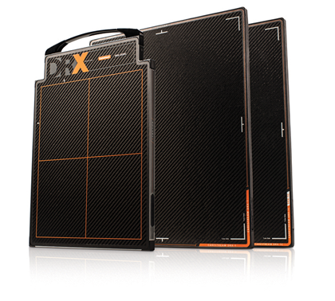

Detectores
carestream

Carestream drx-PLUS
CARACTERÍSTICAS:
Tecnología del detector
Elija un centelleador de gadolinio (GOS) (DRX-1) o el centelleador de cesio (Csl) (DRX-1C), que ofrece una eficacia de dosis y una sensibilidad mayor en un formato de detector de 14 x 17 pulg. (35 x 43 cm).
Detector inalámbrico del tamaño de un cartucho, ISO 4090
• Inalámbrico, estándar 802.11 n.
• Tamaño de imagen: 35 x 43 cm.
• Dimensiones externas máximas: iguales a las del cartucho de 35 x 43 cm.
• Peso: 7.5 lb (3.4 kg).
• Tamaño de píxel: 0.139 mm.
• Alimentación eléctrica: batería recargable integrada o cargador de batería externo.
• Capta 190 imágenes con una sola carga.
• Se puede usar con rejillas estándar.
Consola de captación de imágenes
• Interfaz de pantalla táctil.
• Controla las funciones de obtención de imágenes DR, incluido el acceso a datos del paciente HIS/RIS, la revisión y la administración de imágenes.
Cargador de baterías
• Permite cargar hasta tres baterías al mismo tiempo.
• Eléctrico: cadena de comunicaciones/alimentación opcional de 100-240 V de CA, 50/60 Hz, 1.0A.
Carestream drx 2530c
CARACTERÍSTICAS:
• Posicionamiento fácil y rápido en bandejas de incubadoras pediátricas.
• Diseñado con yoduro de cesio (Csl) para aplicaciones pediátricas que exigen dosis precisas.
• Ideal para radiografías ortopédicas en directo, gracias a su posicionamiento flexible y manejo fácil.
• Intercambiable con toda la familia de productos DRX.
• Tecnología probada, con más de 5,000 detectores que se usan en todo el mundo.
DATOS COMPLEMENTARIOS: Si desea obtener más información sobre los DETECTORES DRX, favor de contactar al representante CARESTREAM de su localidad o a:
CARESTREAM
Teléfono: (33) 3134-6200
o bien, visítenos en: www.carestream.com.mx